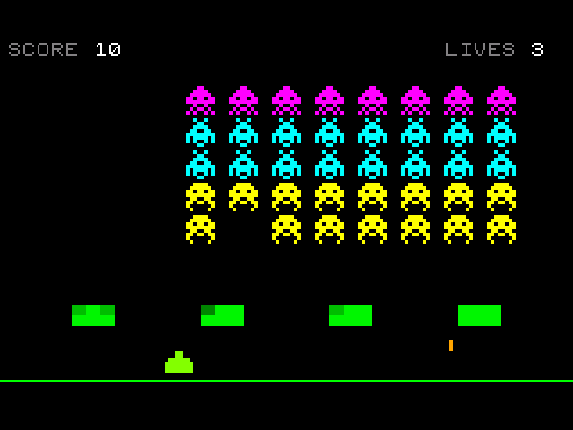
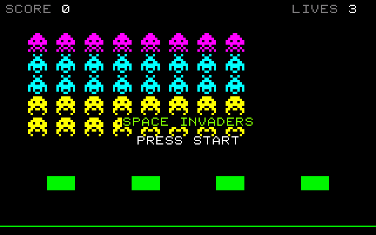
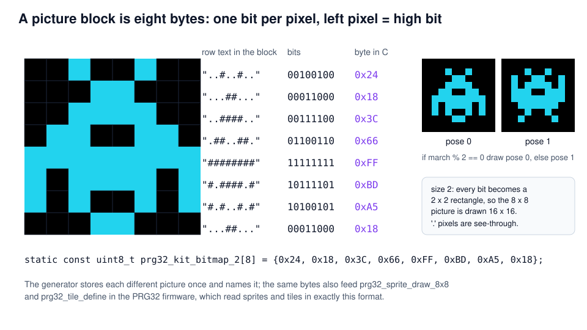
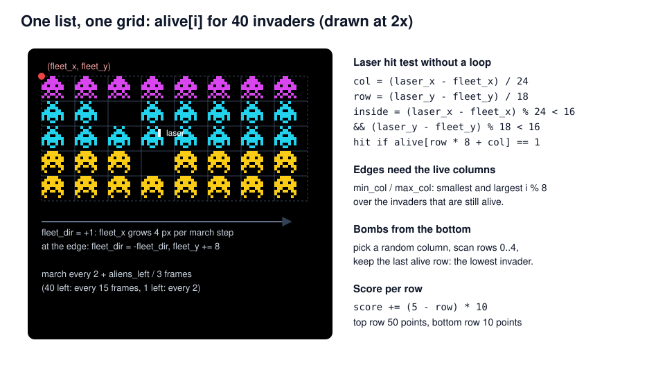
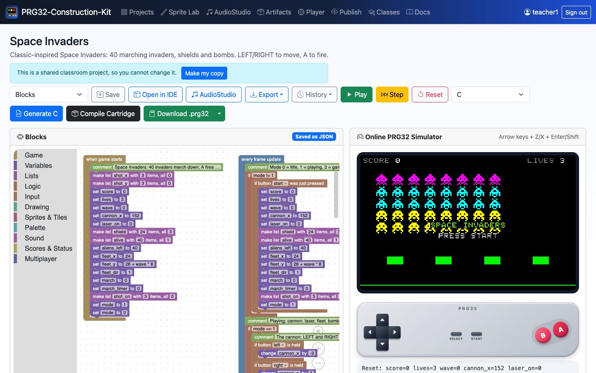
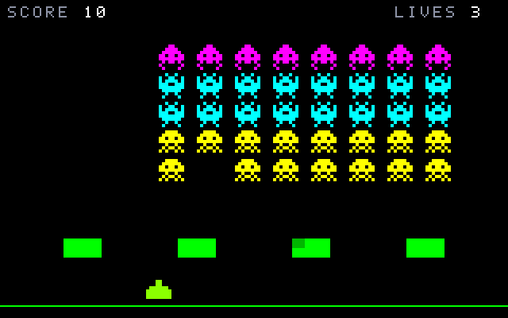

Space Invaders
Pixel pictures, a marching fleet, and many objects at once
PRG32-Construction-Kit tutorial deck, step by step, from blocks to a RISC-V cartridge.

Learning outcomes
- encode 8 x 8 pictures as bytes (one bit per pixel) and animate them with two poses;
- manage a fleet of 40 objects with one list and grid arithmetic;
- design collective motion: the whole fleet steps, reverses at the edges and descends;
- use object pools (three bomb slots) instead of creating objects at run time;
- balance difficulty with time: the fleet speeds up as it shrinks.
Prerequisites: Pong and Breakout tutorials. About 2 hours.
Context
- Space Invaders (Taito, 1978, designed by Tomohiro Nishikado) ran on an Intel 8080 with a 1-bit framebuffer; colours came from cellophane strips on the screen.
- Its famous acceleration was a side effect: with fewer invaders to draw, each frame finished sooner. Here we make it a design rule: march every
2 + aliens_left / 3frames. - It popularised targets that shoot back, shields that wear down, and the high-score chase.
A 1-bit 8 x 8 picture is eight bytes. The same format is used by the PRG32 firmware for sprites and tiles.
Original, classic-inspired reimplementation for teaching; not affiliated with the historical products.
Rules and controls
| Button | Action |
|---|---|
| LEFT / RIGHT | move the laser cannon |
| A | fire (one laser at a time) |
| START | start / play again |
- 40 invaders in 5 rows: 50 points for the top row, 10 for the bottom rows.
- Up to three bombs fall at once; four shields absorb hits.
- The game ends when lives run out or the invaders reach the ground.
- Each new wave starts lower.

Pictures are bytes

Step 1 - Fleet, shields and pools
alive[40]: one item per invader, 1 = alive.shield[24]: 4 shields x 6 blocks, 3 hit points each.shot_on[3],shot_x[3],shot_y[3]: parallel lists describing three bomb slots. A bomb is "created" by switching a free slot on: no memory is allocated while the game runs.
The fleet as a grid

Step 2 - The cannon and the laser
Step 3 - Hitting an invader
Like the brick test in Breakout, the laser's position is turned into a cell with division, and the remainder checks the gap between invaders.
/* Which invader is the laser inside? Each one sits in a 24 x 18 cell. */
col = (laser_x - fleet_x) / 24;
row = (laser_y - fleet_y) / 18;
if (laser_x >= fleet_x && laser_y >= fleet_y && col < 8 && row < 5 && (laser_x - fleet_x) % 24 < 16 && (laser_y - fleet_y) % 18 < 16) {
if (prg32_kit_get(alive, 40, row * 8 + col) == 1) {
prg32_kit_set(alive, 40, row * 8 + col, 0);
aliens_left += -1;
score += (5 - row) * 10;
laser_on = 0;
prg32_audio_note(2, 0, 96, 255, 60);
}
}Step 4 - Shields wear down
- Shield
kstarts atx = 40 + 72 k; inside it,sx / 8is the column and(y - 150) / 6the row of the 8 x 6 block. - The same blocks are used for the laser and for bombs: only the "stop the shot" block differs.
- Drawing uses
rgb(0, 80 + shield[i] * 55, 0): a damaged block is darker.
Step 5 - The march
- Wait
2 + aliens_left / 3frames (15 frames with 40 invaders, 2 with the last one). - Find the leftmost and rightmost live columns.
- At an edge: reverse and drop 8 px; otherwise step 4 px.
- Play one of four low notes: the march is also a soundtrack.
march % 2 selects the picture pose, so the invaders "walk" in step with the sound.
Step 6 - Bombs: an object pool
- One chance in 32 per frame:
random(0, 31) == 0. - Pick a random column and scan its five rows; the last alive row is the lowest invader.
- Find a free slot (
shot_on[s] == 0) and switch it on;drop_row = -1makes sure only one slot is used.
The pool has a fixed size: at most three bombs, no memory allocation, constant cost per frame.
Step 6 - Bombs fall
The shield test is the same group of blocks as for the laser (Step 4), collapsed here as ....
Step 7 - End of the wave, end of the game
save high score calls prg32_score_submit_current_player: the firmware keeps a score table per game.
Step 8 - Drawing 40 animated invaders
The pictures in C
/* ...##... ..####.. .######. ##.##.## ######## ..#..#.. .#.##.#. #.#..#.# */
static const uint8_t prg32_kit_bitmap_0[8] = {0x18, 0x3C, 0x7E, 0xDB, 0xFF, 0x24, 0x5A, 0xA5};
/* ...##... ..####.. .######. ##.##.## ######## .#.##.#. #......# .#....#. */
static const uint8_t prg32_kit_bitmap_1[8] = {0x18, 0x3C, 0x7E, 0xDB, 0xFF, 0x5A, 0x81, 0x42};
/* ..#..#.. ...##... ..####.. .##..##. ######## #.####.# #.#..#.# ...##... */
static const uint8_t prg32_kit_bitmap_2[8] = {0x24, 0x18, 0x3C, 0x66, 0xFF, 0xBD, 0xA5, 0x18};
/* ..#..#.. #..##..# #.####.# ###..### ######## .######. ..#..#.. .#....#. */
static const uint8_t prg32_kit_bitmap_3[8] = {0x24, 0x99, 0xBD, 0xE7, 0xFF, 0x7E, 0x24, 0x42};
/* ..####.. .######. ##.##.## ######## .##..##. ##.##.## #......# .#....#. */
static const uint8_t prg32_kit_bitmap_4[8] = {0x3C, 0x7E, 0xDB, 0xFF, 0x66, 0xDB, 0x81, 0x42};
/* ..####.. .######. ##.##.## ######## ..#..#.. .#.##.#. #.#..#.# ........ */
static const uint8_t prg32_kit_bitmap_5[8] = {0x3C, 0x7E, 0xDB, 0xFF, 0x24, 0x5A, 0xA5, 0x00};
/* ...##... ...##... .######. ######## ######## ######## ........ ........ */
static const uint8_t prg32_kit_bitmap_6[8] = {0x18, 0x18, 0x7E, 0xFF, 0xFF, 0xFF, 0x00, 0x00};Each picture block becomes a constant array of eight bytes; the comment above it shows the rows as text. The generator stores identical pictures only once.
Play it in the browser

- Dashboard, Examples, Space Invaders (complete game), Add.
- Play, then START; Z fires.
- Edit a picture block: change a
.into#and watch the invader change at once. - Generate: each different picture becomes one
static const uint8_t ...[8].
Build and run the cartridge
Compile builds space-invaders-esp32c6.prg32 and space-invaders-qemu.prg32; download them from the links in the IDE's Build tab.
python3 -m prg32 qemu upload space-invaders-qemu.prg32
python3 -m prg32 qemu run
PRG32-QT: Import Cartridge, or
prg32qt-headless space-invaders-qemu.prg32 300 --dump-ppm si.ppm

What the toolchain produced
| Measure | Value |
|---|---|
| Blocks | 3 stacks, 194 blocks |
| Generated C | 566 lines, 7 distinct pictures |
| RISC-V code (rv32imc) | 6420 bytes |
| Lists | alive[40], shield[24], shot_on/x/y[3] |
| Required PRG32 features | audio, sprites |
| Verified on | simulator (pixel-identical title screen to the QEMU framebuffer), QEMU, PRG32-QT |
The title screen rendered by the browser simulator and the one read from the QEMU firmware framebuffer differ in 0 of 64 000 pixels.
Exercises
- Mystery ship: add a UFO that crosses the top row every 20 seconds (
frame() % 600). - Two lasers: turn the laser into a pool of two slots, like the bombs.
- Shield shapes: give each shield 12 blocks in a 4 x 3 arch. Which formulas change?
- Fairness: bombs never fall from a column with no invaders. Explain how the repeat over rows guarantees it.
- Hardware sprites: replace draw picture with draw 8x8 sprite and compare the look (no scaling, opaque background).
References
- PRG32 sprite and tile API (
prg32_sprite_draw_8x8,prg32_tile_define): https://github.com/riscv-prg32/PRG32 - Block reference, pictures and lists:
docs/blockly.md - R. Nystrom, Game Programming Patterns (2014), "Object Pool" and "Sequencing Patterns".
- C. Kohler, Power-Up: How Japanese Video Games Gave the World an Extra Life, BradyGames (2004).